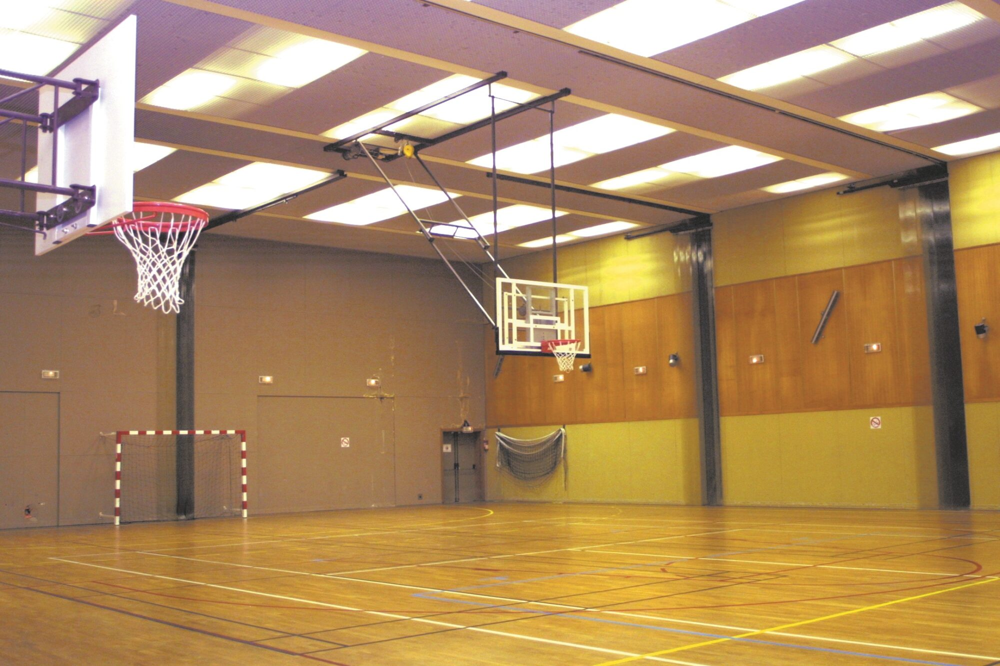
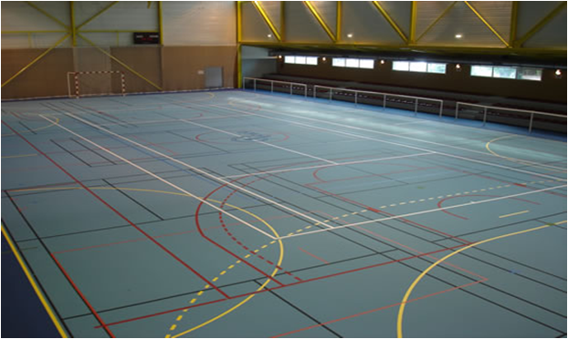
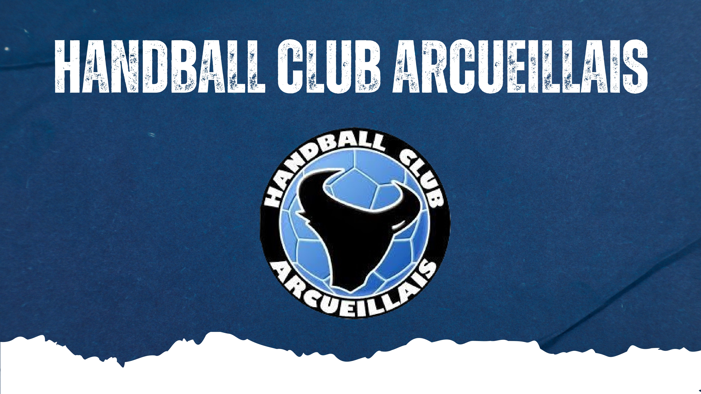

Événements du Club
La vie événementielle au HBCA
Au HandBall Club Arcueillais (HBCA), chaque occasion est bonne pour célébrer le handball et rassembler notre communauté. Nous organisons une variété d'événements festifs tout au long de l'année, tels que :
- Le tournoi parents-enfants de la Galette
- Les tournois mixtes Loisirs
- Les matinées scolaires découvertes
- Le challenge -9 ans Henri Didon, basé sur la devise « plus vite, plus haut, plus fort »
- La fête annuelle du club
- Des stages durant les vacances scolaires pour les collectifs allant des -13 aux -18 ans
Nos bénévoles et services civiques jouent un rôle essentiel en apportant un soutien quotidien à l'organisation de ces événements. Leur aide précieuse garantit la bonne réussite de chaque manifestation.
Calendrier des événements
-

Stage de Printemps(-15 et -18)
Date : Du 21 au 25 avril 2025
Lieu : Gymnase de la Caisse des dépôts
Description : Stage de perfectionnement pour les jeunes de 13 à 18 ans pendant les vacances de Pâques. -

Tournoi Mini Hand - Challenge Henri Didon -9 ans
Date : 15 mai 2025
Lieu : Complexe sportif d'Arcueil
Description : Tournoi pour les moins de 9 ans basé sur la devise olympique « plus vite, plus haut, plus fort ». -

Fête Annuelle du Club
Date : 21 juin 2025
Lieu : Complexe sportif d'Arcueil
Description : Grande journée de célébration avec tournois, démonstrations et barbecue pour tous les membres du club. -
Tournoi Halloween
Date : 31 octobre 2025
Lieu : Gymnase Lucien Dimet
Description : Tournoi déguisé pour tous les âges, avec concours du meilleur costume.
Événements à venir
Restez à l'écoute pour plus d'informations sur nos prochains événements :
- Assemblée générale (27 Juin 2025 )
- Tournoi Loisirs (29 Juin 2025 )
- Journée sport adapté avec le basket (2 Juillet 2025)
- Journée portes ouvertes et forum des associations (septembre 2025)
- Tournoi de Noël (décembre 2025)